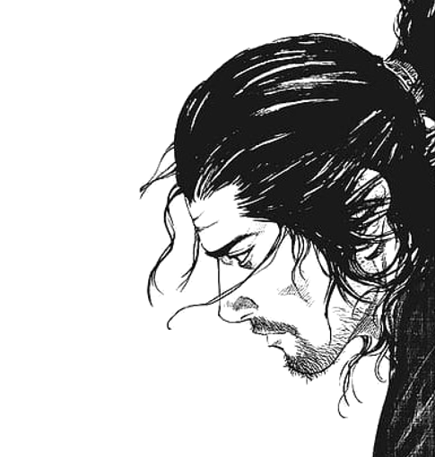
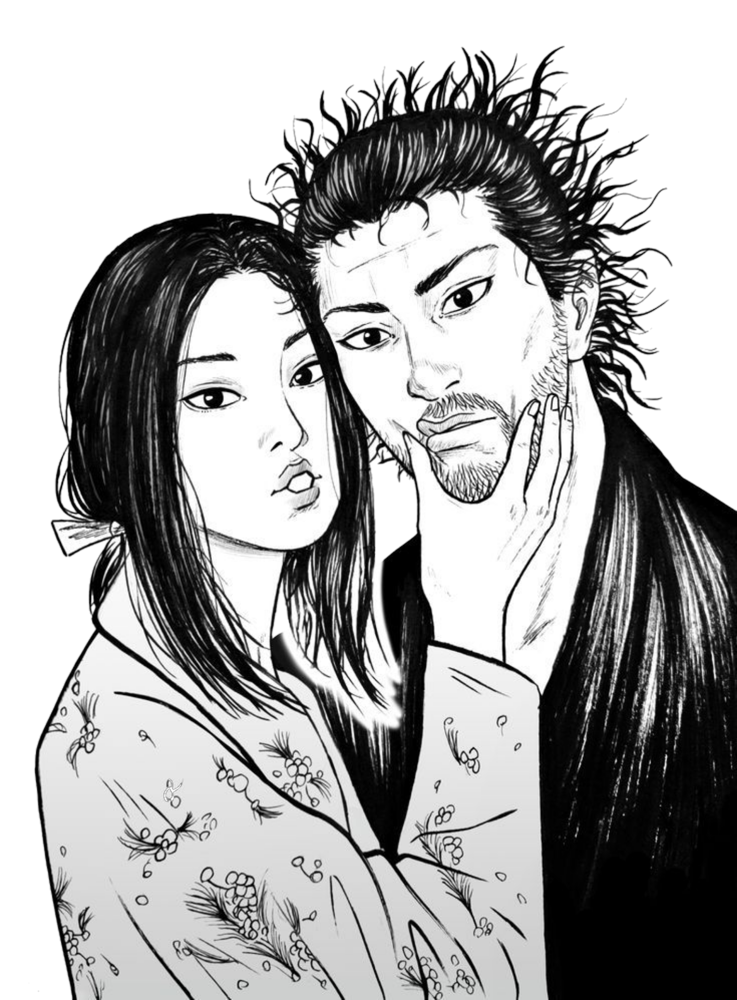
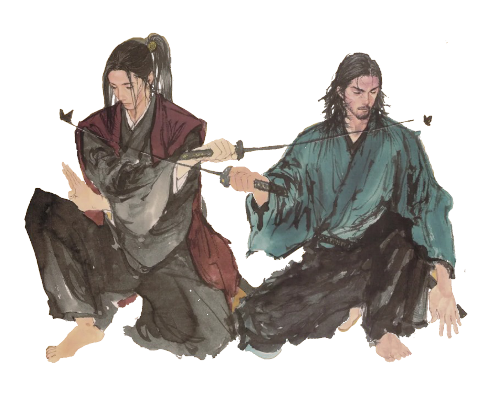

Biography (宮みや本もと武む蔵さし, Miyamoto Musashi)
Past
Growing up in the late 16th century Sengoku era Japan, Musashi was born as Shinmen Takezo, the son of a samurai family.
His father Shinmen Munisai is one of the most renowned samurai across the nation.
At a young age, his father divorced his mother and forced Takezo to learn martial arts.
Takezo longed to see his mother again and show her how much he grown but his mother rebuffed him, telling him to return to his father.
This resulted in Takezo's loneliness, which grew coupled with his fear for his father.
On several occasions the young Musashi tried to assassinate his father but always failed, only to be beaten by Munisai afterwards.
Takezo would run into the mountains through the bamboo forest to calm down.
This led Takezo to train himself with nature, developing a close bond with the wilds.
Once he found a swordsman's corpse in a cave and was awed, hoping to be like him.
As a child, he became close friends with Matahachi Honiden and Otsu.
By the age of 13, he saw a challenge post by Kihe Arima and accepted the duel.
Kihe Arima underestimated Takezo for his young age and Takezo killed the Kihe without hesitation.
One time, Ito Ittosai had travelled to his village and dueled with an unknown swordsman.
Takezo heard of his stories and admired him. He even sculpted a demon statue and aspired to be like him.